Onto the main section, the plans and progress. Since the time we were doing our assignment 2 on the project section our group members had already decided and outlined our project for future usage. Since the four of us share one common thing
is that we enjoy playing games and program coding, so we simply combined the mutual interests together and code ourselves a game that we desire. That was the easy part of the process, the first small-but-not-so-small challenge we went against
was choosing what type of game we will be creating. Because throughout the history of gaming development, the game developers have come up with so many types of games consisting of unique gameplay styles to be able to satisfy multiple groups
of users all around the world and not just simply target one crowd of players, such as Multiplayer Online Battle Arena (MOBA) games that are designed for players that are into a competitive team fighting style games such as League of Legends,
Dota, or if fighting games if players are into a one-on-one showdown where you can beat your opponent with your creative optimal combos and amazing reflexes. Going back to our game choosing problem, after taking consideration looking at each
members’ skills and experiences we have listed out the limitations our first game should have to make it so that it is relatively easy to make and the players would still enjoy playing the game, and that is when we as a group has decided to
make a tower defense game.
The reason behind a tower defense game is that, gameplay wise, the basic mechanics that the creators need to pay attention to is the movement behaviour of each unit inside the game, the terrain and the ability to design levels so that the
game can gradually become more challenging and encourage the players to think outside of the box, that was the generic features for every tower defense game out there, to add in our different unique approach onto the game we will be putting
the players into the map and instead of just dragging a turret onto the desired location, the turrets and items will be randomly dropped onto the map and the players will have to manually move their character to the drop location and pick
them up before placing them down to deal with the enemy waves. By modifying the mechanics we are giving the players more option than just drag and drop, now not only that they have to think about where to place down their defense, but they
will have to think about what is the best way to optimize the time between travelling to the drop zone and placing down the turrets in the ideal space there will be more features added into the game to increase the quality of life for
players, that is basically our game plan design for the group project.
As of this moment our group has already developed the story line for the game as well as the description of in-game items, our way of approaching the game first is going for the content description as it is a written part of the project that
can be completed right away without encountering any challenges. As this segment is being written the group has already finished designing one of the stage maps of the game for the use of demonstration, Khoa, the core member of our group, the
one that is helping the group making the project real is currently showing the group his ways around the Unity platform while teaching the members how to make the overall map. Not only that but the website introducing the project is already
reaching its final stage including the background, designing and details, overall concepts of how the game is going to be. Knowing all four of us do not have enough experience to create a game yet so all of us are approaching the project step
by step slowly. Currently, we are giving our best and focus on completing the website, its present version still lacks proper context distribution, most of the problems surrounding how to put in a large amount of information into a segment
without it looking boring towards the viewers’ eyes.
Here is our plan in detail, initially we will have our workforce into 2 categories, Khoa and Nhat will be working on graphics and ideas while Phong and Kent will do the coding part. Khoa with his artistic talent will work on creating
characters, and Nhat will search for free game asset to minimize our budget and time, Nhat is also responsible for building map. The programmer team will set up basic movement and interaction with turrets.
In the second stage of the work, Khoa will be doing more on sketching, and we will have more concept of enemy minions, as we want to have a good diversity. Nhat will be on the programming team at this stage, specifically, Kent, Phong and
Nhat will use a navigation map to define which is walkable and an unwalkable area to enemies. Moreover, they will build different behaviors for each type of enemy based on our discussion. This includes movement, attacking, immobilized stage,
taken damage, buff and debuff. With uncompleted art, programmers in our team will be working with white squares.
In the next stage, after finishing sketching, Khoa will blow life to those sketches by adding color and retexturing the outlines. Shadow is also added to create depth for ingame characters. On the other hand, the programming team will build
behaviors for turrets. It is likely we will have another discussion on this to have the right aim toward this stage. What we expect in turrets is that they must be balanced and possess a certain power and weakness. This enables players to
play with diverse strategies, adding fun and challenges to the game. Overtune or underpower turrets will be modified at testing. At the end of this stage the game is fundamentally playable.
The next work that we will put on line is having visual effect and sound effect for interactions, therefore, Khoa and Kent will be occupied with the artistic work. Khoa will continue working on the graphic while Kent will undertake the audio
section. With the playable game, we will have some testing, which we will be searching for errors and unwanted features. This stage, in a nutshell, we will perfect our game play. It is also considerable to have a survey for any possible
improvement and modification.
At the end of the previous stage, we are likely to have a perfect game play in a single scene, yet we will need some indicators such as UI. This is also when we will be about to build a system of saving and loading. This system will enable
later developments for example, character selection, skin selection, currency transportation between scenes.Additionally The programmer team will be assigned to both building systems and UI. Due to a smaller amount of work on UI graphic and
sound, both Kent and Khoa will also do program tasks.
Ultimately, the game will be almost completed, the next part is that we will construct a menu, starting scene and other maps. During this stage, Kent will be assigned with background music composition. He will undertake plenty of work in
this part as he is responsible for background music in the menu, different maps with different environments and when the battle boss appears. Other members will be working on level design, where we anticipate another discussion. We believe
that level designing plays an important role in influencing as well as delivering an impact towards our video game. According to our plan, the game is designed for collaboration, as a result, every map needs to express this attribute.
Advancing into the main scene, we would build a shop where players purchase and unlock new characters, equipment and items. There would also be many other facilities inside the main scene too, map selection, character selection, smith for
upgrading, an indicating banner that shows your current rankings across the leaderboard, where top players are honored and events. There is also a consideration among us of making a ranking system, to illustrate, this system title all players
with appellations, and at the end of the year they will be rewarded with the rank they earn. It seems to add more challenge but still more work on our team. The game should be complete at this stage.
We will hold the lasting meeting which we will discuss about monetization. According to our research, players prefer reward-video rather than any other kind of advertisement. Therefore, we would build this rewarding system based on the
length of the advertisement. We prefer Unity ads over Google ads ,as a result we would only use Google ads as a substitution in case Unity ads does not work. The reason behind this is Unity ads are about other games in which may have a
gameplay ads, this type of ads allows players to fill their time rather than just watching. A consequence of this is that players would not get bored with ads and continue on watching at least to meet their reward demands. We also have some
analysis about banners ads and we found an effective solution to maximize our income. It is due to the fact that when the game is paused by menus, there is an unused large space, and players only pay attention to the menu. We would take
advantage of this harmless space for banner ads. Finally, it is also necessary for In App Purchase(IAP), which according to statistics, accounts for 20% of overall revenue of many video games, it may help players to process the video game
faster. They would experience the game fulfiller.
There were moments when our design did not work as planned, situations like the website refused to pop up a short demo video consisting the images of the initial character, turret sketch designs that we wanted instead it did not pop up at
all so we had to discuss about if we want to reconsider to remove that video option and we have decided to change it into one of the website’s gallery banner. A couple of times when we looked back at some of the game’s assets and backtracked
thinking whether or not if those extra elements can potentially bring down the level of interest of the gameplay overall, initially there will be a pet system that can assist the players with scouting and getting the dropped items for them,
not only that but there was going to be a friendship system that increases over the amount of times players bring their pets along with them onto the battleground, but with all of the work that has already weighing down onto the member’s
to-do list, the whole crew started to lose motivation, so in order to minimize the amount of work, we decided that all of the details we thought are unnecessary will be removed and refocus making the gameplay to reduce the dilution bringing
back the original tower defense atmosphere. Though it is something that the group still wants to revisit the moment the game is fully designed and attempts to implement the features in as an update patch, in the future the pet system can
surely improve the players’ quality of life. But until then, it is highly recommended that our group needs to accomplish developing the game first.
In addition there will be multiple kinds of turrets that shoot multiple types of bullets with different travel speeds, Khoa had an idea of designing the curve projectile of each of the turret’s bullets, although it may seems to add more
realistic towards the game but to know how to code it out it will have to take one person a lot of time to learn the physic behind the curvings, moreover they would have to deliver that concept into codes for the game which would consume a
huge amount of our time. To our response we discussed and drew out the conclusion of aborting the idea of curving missiles/bullets. Same goes for the pet system, curve projectiles will be one of the future changes of the game. Judging from
the roadblocks that we have encountered during the time working on the project the ones that we made changes to were mostly because of how much time it consumes rather than we getting ourselves into technical troubleshootings. Technical-wise
there were problems and issues that our group had come across but they did not make that much of an obstacle for us to classify them as deadends mainly because at the end of the day we would always find a way to interact with the problem
instead of choosing our way to remove it.
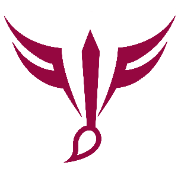
Khoa
Main Role: Graphic Designer- Khoa could make artwork and create characters as well as environment for us. He will be responsible for User Interface graphic and the in game graphic.
Sub Role: Programmer- Additionally, he has a strong understanding of programming, so having him on programming team is an enormous advantage, he will be carrying the burden of leader because he has experience in creating games
before. So we believe he could lead us toward glory.
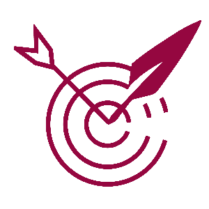
Khang
Main Role: Sound Designer- Kent has an extremely profound love for music, so we let him challenge himself to the world of creating background music and SFX( sound effect).
Sub Role: Programmer- Kent similarly has his attention on Programming, therefore, he would be able to develop this skill through the work. He would work as a programmer when there is no task related to sound.
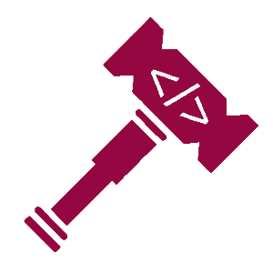
Phong
Main Role: Lead Programmer Phong would undertake tasks under the programming field, and work as a substitute when other teammates have to work on non-IT professional tasks such as creating graphics or sound. We think he could
carry this responsibility is due to his willingness. Phong is self-sacrificing and trust worthy and those characteristics are valuable.
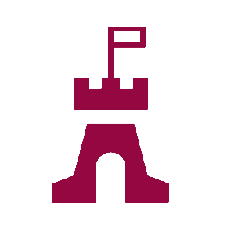
Nhat
Main Role: Manager- Nhat is responsible for our time management and schedule. He learnt about business before so we believe he would perform this task well to maximize the budget and time.
Sub Role: Programmer Support Our team of programmer is a bit crowded and we also want to have a less stressing task for him. Therefore, we came up with the solution Programmer Support, one reason is that he will be in IT
professional and he would not carry a real burden of programming.
 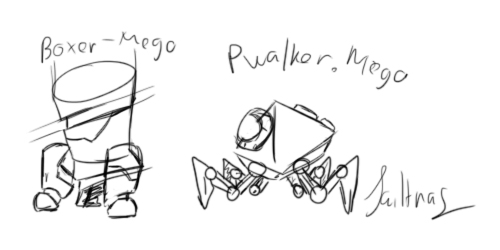
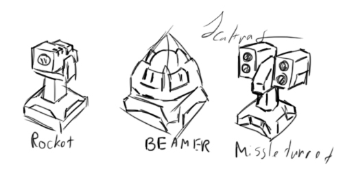
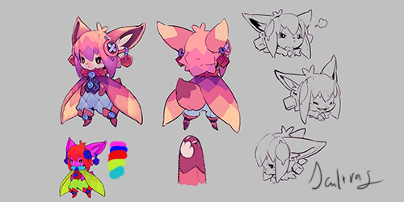
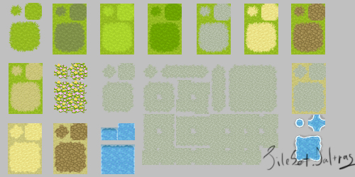
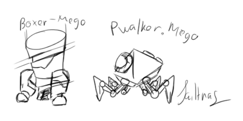
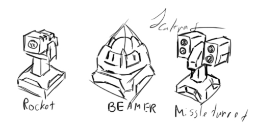
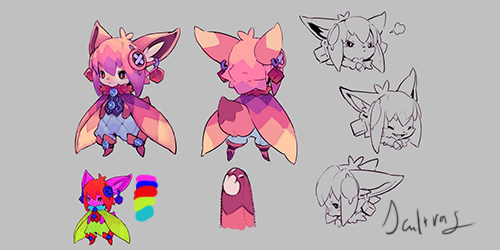
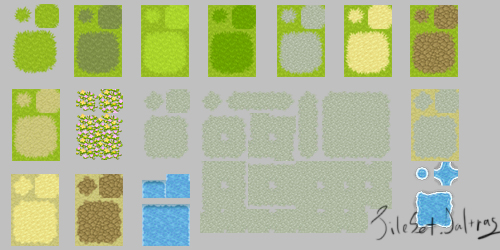